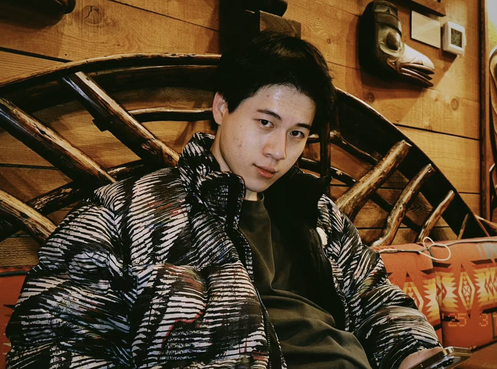
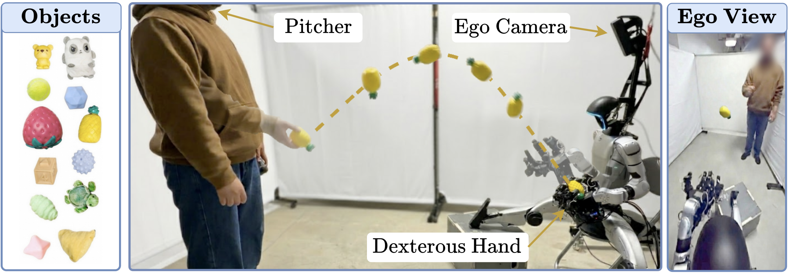
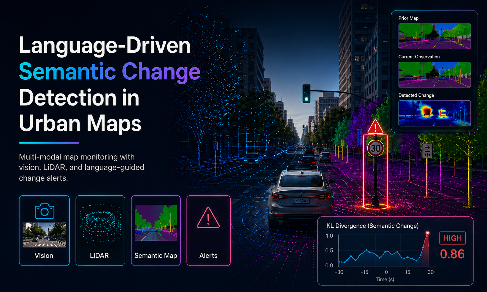
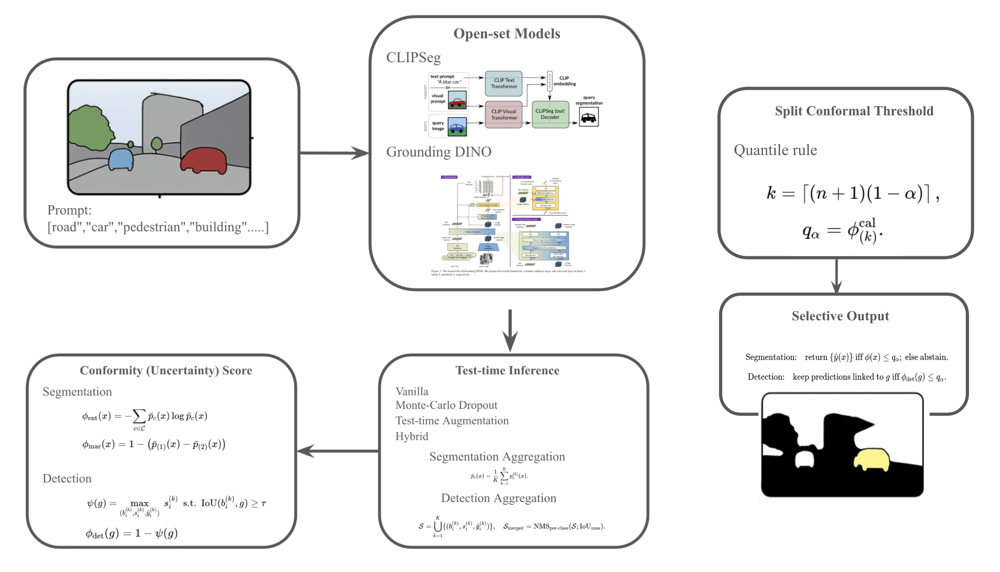

|
Huaze Liu 刘铧泽
Hi! I am a senior undergraduate student at Harvey Mudd College majoring in Computer Science and Mathematics, with a social science concentration in Economics.
I work on robotics control, dexterous manipulation, and reinforcement learning. Broadly speaking, I'm interested in how systems perceive and acts in the real world robustly. At Harvey Mudd College, I closely worked with Prof. Adyasha Mohanty
on sensor fusion for trustworthy autonomous navigation.
I also worked on humanoid robotics research under the supervision of
Prof. Michael Tolley and Prof. Hao Su at UC San Diego in 2025.
Email /
Github /
Linkedin /
Google Scholar
|

|
|
My Research
My research focuses on:
- Dexterous Manipulation — integrating model-free learning with physics-based simulation, optimization, and control to solve contact-rich dexterous manipulation efficiently and reliably.
- Multimodal World Model — learning predictive models that fuse vision, tactile, and proprioception to support planning and robust closed-loop behavior in unstructured environments.
|
|
Publications & Preprints
|
|

|
Anonymous submission
Title and author list withheld for double-blind peer review
Submitted to IROS 2026
Contributed to learning-based control on a humanoid platform with sim-to-real deployment at interactive control rates.
|
|

|
Language-Driven Multimodal Semantic Change Detection in Urban Maps
Huaze Liu *, Zihao Gao *, Adyasha Mohanty
Proceedings of the Institute of Navigation GNSS+ conference (ION GNSS+ 2025)
[Paper] /
[Slides] /
[Video]
We designed an information-theoretic fusion framework that tracks consistency between camera and LiDAR maps; by treating semantic drift as a shift in probability distributions, the system detects when perception diverges from reality.
|
|

|
Conformal Prediction for Reliable Test-Time Uncertainty in Robotic Vision
Huaze Liu, Adyasha Mohanty
Southern California AI and Robotics Symposium 2025
[Paper] /
[Paper (Long version)]
To address limitations of traditional uncertainty models under high-dimensional and non-Gaussian sensor noise, we applied conformal prediction to robotics perception, providing mathematically guaranteed bounds on prediction errors.
|
|
{kind=link}